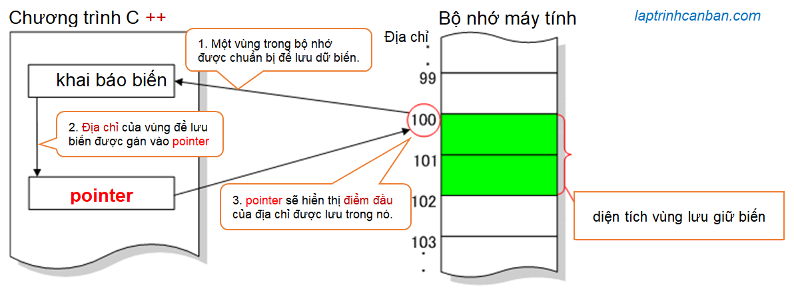
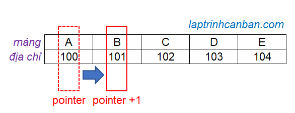

Con trỏ trong lập trình là một khái niệm khá khó nhằn đối với các bạn mới học về C++. Không ngoa khi nói rằng C++ khó vì có con trỏ. Tuy nhiên nếu làm chủ được con trỏ, bạn có thể hiểu và thao tác với dữ liệu trong bộ nhớ máy tính, và các kiến thức liên quan mà bạn học được thông qua con trỏ cũng rất hữu ích cho việc học các ngôn ngữ hướng đối tượng sau này như Java chẳng hạn. Hãy cùng tìm hiểu con trỏ trong C++ là gì, quan hệ giữa con trỏ và địa chỉ trong C++, cấu trúc, vai trò và cách sử dụng con trỏ sau bài học này nhé.
Con trỏ trong C++ là gì? Con trỏ và địa chỉ trong C++
Con trỏ trong C++ là một biến được dùng để lưu trữ địa chỉ của dữ liệu trong bộ nhớ máy tính.
Khi chúng ta sử dụng một dữ liệu như biến, hàm hoặc struct trong chương trình C++, một vùng trong bộ nhớ máy tính sẽ được chuẩn bị để lưu tạm thời giá trị của dữ liệu. Để truy cập vào dữ liệu này, bạn cần phải biết vị trí của vùng lưu giữ nó trong bộ nhớ.
Giống như số nhà của bạn được đăng ký trên phường, trong máy tính mỗi dữ liệu sẽ được máy tính cấp phát cho một số để biểu thị vị trí của nó trong bộ nhớ của máy tính. Số này chỉ điểm đầu của vùng chứa dữ liệu trong bộ nhớ, và nó sẽ đại diện cho cả vùng đó. Và chúng ta gọi số chỉ vị trí này là địa chỉ của dữ liệu trong chương trình.

Tuy nhiên thì con số này trông phức tạp hơn các số thập phân như số nhà mà chúng ta đang dùng, bởi vì nó được máy tính biểu diễn dưới dạng một dãy số thập lục phân với khá là nhiều chữ số. Để có thể dễ dàng sử dụng được số này thì khái niệm con trỏ đã ra đời. Con trỏ chỉ vị trong C++ và giúp chúng ta thao tác với vị trí này, cũng như với giá trị lưu tại vị trí đó một cách dễ dàng hơn.
Tóm lại thì con trỏ là một biến dùng để lưu giữ địa chỉ của dữ liệu, và địa chỉ này chính là điểm đầu của vùng chứa dữ liệu đó trong bộ nhớ máy tính.
Con trỏ trong C++ dùng để làm gì
Như Kiyoshi đã giải thích ở trên, thì tác dụng của con trỏ trong C++ chính là để lưu giữ địa chỉ của dữ liệu trong bộ nhớ máy tính, và bằng cách truy cập vào địa chỉ này, chúng ta có thể lấy được giá trị của dữ liệu tại đó.
Ngoài ra thì giá trị của con trỏ cũng là một số, nên chúng ta cũng có thể thực hiện các phép tính toán với con trỏ, ví dụ như cộng thêm hoặc hoặc trừ đi một số lượng đơn vị.
Do đó, con trỏ trong C++ sẽ được dùng để làm 1 trong 2 công việc sau đây trong chương trình:
Thao tác với địa chỉ bằng các phép tính toán với số được lưu trong nó
Thao tác với giá trị tại địa chỉ mà nó lưu mà thôi.
Bốn lợi ích khi sử dụng con trỏ trong C++
Dưới đây là bốn lợi ích rõ nhất mà con trỏ trong C++ mang lại cho chúng ta như sau:
Bằng cách sử dụng một con trỏ, chúng ta có thể lấy hoặc thay đổi giá trị được lưu tại địa chỉ. Đặc biệt, nếu bạn sử dụng con trỏ hàm trong C++, bạn có thể thay đổi nhiều biến đồng loạt chỉ với một hàm.
Bằng cách sử dụng chỉ một biến con trỏ trong mảng trong C++, chúng ta cũng có thể nhận và thay đổi toàn bộ phần tử trong mảng
Một biến con trỏ duy nhất cũng có thể nhận hoặc thay đổi giá trị của tất cả các phần tử của một struct (cấu trúc) trong C++. Do đó giúp chúng ta có thể đỡ rắc rối khi phải xử lý từng phần tử của struct.
Với một biến con trỏ, bạn có thể chọn hàm trong danh sách nhiều hàm để sử dụng, và giúp việc thay đổi nội dung xử lý sau đó dễ dàng hơn.
Cấu trúc con trỏ trong C++
Cấu trúc con trỏ trong C++ như sau:
Khai báo con trỏ
Để khai báo con trỏ trong C++, chung ta sử dụng với cấu trúc ngữ pháp sau đây:
type *p;
Trong đó type là kiểu dữ liệu của con trỏ, và p là tên con trỏ. Lưu ý là kiểu dữ liệu của con trỏ phải giống với kiểu dữ liệu của dữ liệu cần lưu địa chỉ trong con trỏ.
Ví dụ, chúng ta khai báo con trỏ tên p với kiểu int như sau:
int *p; |
Lưu ý là các cách viết sau đây cũng được chấp nhận khi khai báo con trỏ trong C++:
int* p; |
Khai báo đồng thời nhiều con trỏ
Để khai báo đồng thời nhiều con trỏ trong C++, chung ta sử dụng với cấu trúc ngữ pháp sau đây:
type *p1, *p2, *p3,... ;
Trong đó type là kiểu dữ liệu chung của các con trỏ, và p1, p2, p3 là tên của các con trỏ. Chúng ta sẽ đặt các con trỏ cách nhau bởi dấu phẩy để khai báo chúng đồng thời như trên.
Ví dụ, chúng ta khai báo các con trỏ có cùng kiểu dữ liệu như sau:
int *p1, *p2, *p3; |
Lưu ý là cách viết sau đây là sai khi khai báo đồng thời nhiều con trỏ:
int* p1, p2;
Chúng ta rất hay nhầm lẫn về vị trí của dấu hoa thị như cách viết này, tuy nhiên chương trình C++ sẽ coi cách viết này tương tự như:
int *p1, p2;
Có nghĩa là chúng ta khai báo đồng thời 1 con trỏ, và một biến có cùng kiểu int mà thôi.
Gán địa chỉ cho con trỏ
Để lấy địa chỉ của một dữ liệu trong C++, ví dụ như lấy địa chỉ của một biến chẳng hạn, chúng ta đặt toán tử & vào đằng trước tên biến đó.
Ví dụ:
# |
Sau khi lấy địa chỉ của một biến, chúng ta có thể gán địa chỉ này vào con trỏ như ví dụ sau đây:
|
Kết quả, địa chỉ của biến num được gán vào con trỏ p sẽ được in ra dưới dạng số thập lục phân như sau:
pointer: 0xc131ff8c4 |
Khởi tạo con trỏ trong C++
Ngoài cách khai báo trước rồi gán giá trị sau cho con trỏ, thì chúng ta cũng có thể tiến hành khởi tạo con trỏ với giá trị ban đầu với cấu trúc ngữ pháp sau đây:
type *p = &va ;
Trong đó p là tên con trỏ, và va là tên biến có địa chỉ được gán vào con trỏ. Lưu ý đừng quên viết dấu & đằng trước tên biến này.
Ví dụ cụ thể, chúng ta viết lại ví dụ ở phần khai báo con trỏ bằng cách khởi tạo nó như sau:
|
Cách dùng con trỏ trong C++
Như Kiyoshi đã giải thích ở trên thì con trỏ trong C++ sẽ được dùng để làm 1 trong 2 công việc sau đây trong chương trình:
Thao tác với địa chỉ bằng các phép tính toán với số được lưu trong nó
Thao tác với giá trị tại địa chỉ mà nó lưu mà thôi.
Lấy giá trị tại địa chỉ lưu trong con trỏ C++
Để lấy giá trị tại địa chỉ lưu trong con trỏ, chúng ta gán dấu hoa thị * vào đằng trước tên con trỏ với cú pháp như sau:
*p;
Trong đó p là tên của con trỏ.
Ví dụ cụ thể:
|
Kết quả chương trình:
Gia tri tai đia chi luu trong con tro= 10 |
Thao tác với địa chỉ lưu trong con trỏ C++
Ở phần trên chúng ta đã biết con trỏ là một biến dùng để lưu giữ địa chỉ của dữ liệu, và giá trị của địa chỉ này chính là vị trí điểm đầu của vùng chứa dữ liệu đó trong bộ nhớ máy tính.
Giá trị của con trỏ cũng là một số, do đó bằng cách thực hiện các phép tính với con trỏ, chúng ta có thể dịch chuyển địa chỉ mà nó lưu trữ trên bộ nhớ máy tính. Các phép tính có thể dùng ở đây là thêm vào hoặc trừ bớt một đơn vị số nguyên từ con trỏ.
Đây là tính chất rất quan trọng giúp chúng ta có thể ứng dụng con trỏ trong xử lý hàm, mảng , struct hay là chuỗi trong C++. Ví dụ như đối với mảng chẳng hạn, bằng cách sử dụng con trỏ và mảng trong C++, chúng ta có thể dịch chuyển địa chỉ của con trỏ lần lượt sang địa chỉ của các phần tử chứa trong mảng đó trên bộ nhớ máy tính.

Lưu ý là việc thêm 1 đơn vị vào con trỏ không có nghĩa là địa chỉ mà con trỏ đang lưu giữ cũng sẽ được thêm 1 đơn vị. Do đơn vị nhỏ nhất trong bộ nhớ là 1 byte, và tùy thuộc kiểu dữ liệu lại được chứa bởi kích thước bộ nhớ khác nhau, ví dụ như char là 1 byte còn int là 4 byte, nên khi con trỏ dịch chuyển 1 đơn vị, thì trên bộ nhớ sẽ dịch chuyển đúng bằng số đơn vị byte nhỏ nhất tạo nên kiểu dữ liệu đó.
Ví dụ, chúng ta cộng thêm 1 đơn vị vào con trỏ trong các trường hợp dữ liệu thuộc nhiều kiểu khác nhau như sau:
|
Kết quả trả về:
Gia tri ban dau cua con tro kieu char: 1290950691 |
Bạn có thể thấy tuy cùng dịch chuyển con trỏ 1 đơn vị, nhưng kiểu char sẽ dịch chuyển địa chỉ thêm 1 byte trên bộ nhớ, trong khi đó thì kiểu int sẽ dịch chuyển địa chỉ thêm 4 byte trên bộ nhớ.
Ứng dụng tính toán trên con trỏ với các kiểu dữ liệu trong C++ sẽ được Kiyoshi tiếp tục mang đến cho bạn trong các bài viết tiếp theo.
Tổng kết
Trên đây Kiyoshi cùng bạn tìm hiểu về con trỏ trong C++ rồi. Để nắm rõ nội dung bài học hơn, bạn hãy thực hành viết lại các ví dụ của ngày hôm nay nhé.
Và hãy cùng tìm hiểu những kiến thức sâu hơn về C++ trong các bài học tiếp theo.
URL Link
https://laptrinhcanban.com/cpp/lap-trinh-cpp-co-ban/con-tro-trong-cpp/con-tro-trong-cpp/
HOME › lập trình c++ cơ bản dành cho người mới học lập trình>>14. con trỏ trong c++